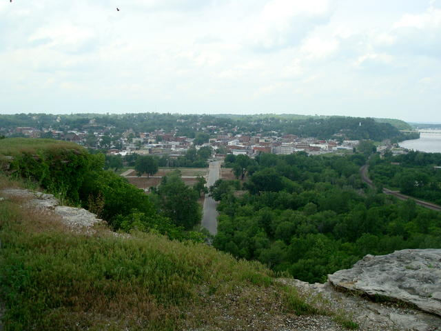
Сегодня ездил в городок Ганнибал, где происходило действие книжки
"Приключения Тома Сойера". У Марка Твена этот город назван
"Санкт-Петербургом".
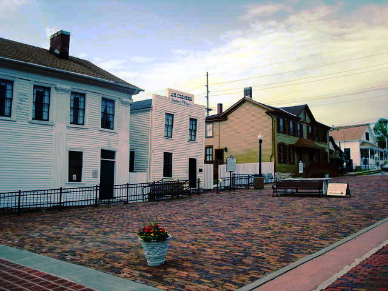
Здание в центре - адвокатская контора Клеменса, отца Марка Твена (настоящее
имя Сэм Клеменс)
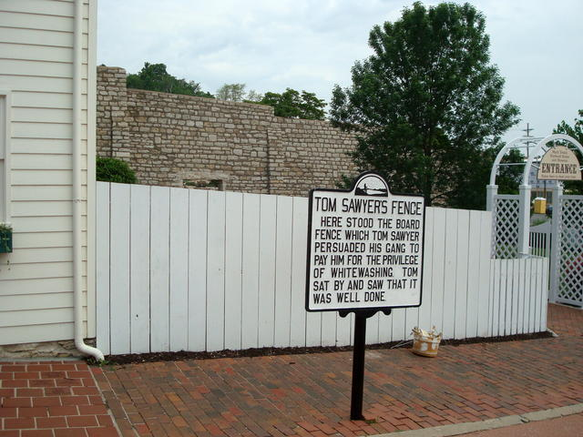
Тут же недалеко забор, который нужно было белить. Вернее, это точная
реконструкция забора, примыкающего к дому писателя.
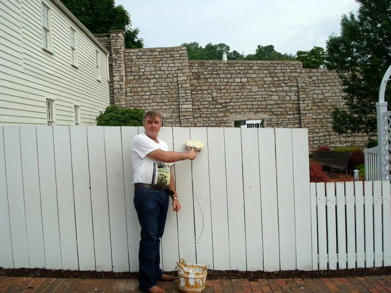
Желающих побелить до сих пор очень много. Иногда даже возникает очередь.
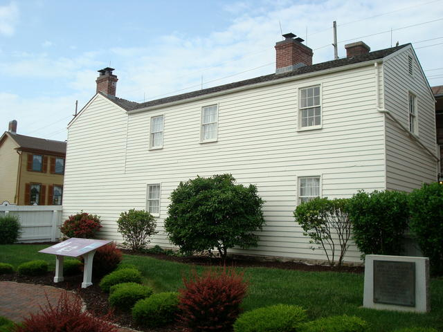
Вот сам дом Твена.
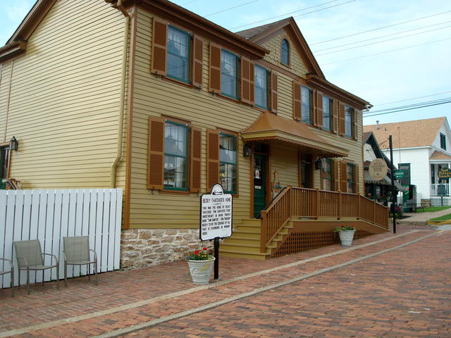
А здесь, через дорогу жила лирическая героиня Бекки Тэчер.
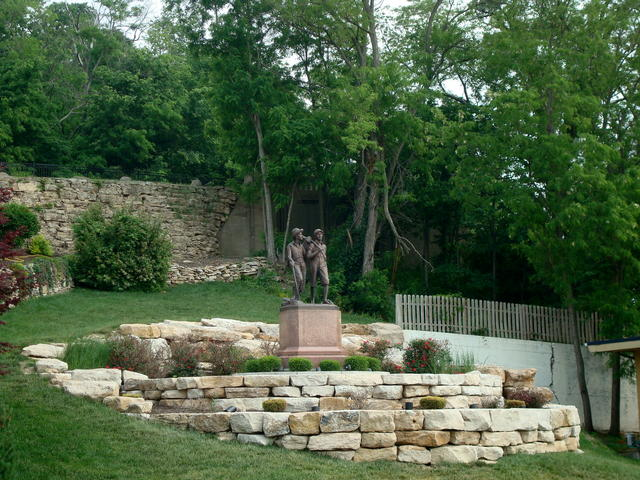
Памятник Тому и Геку
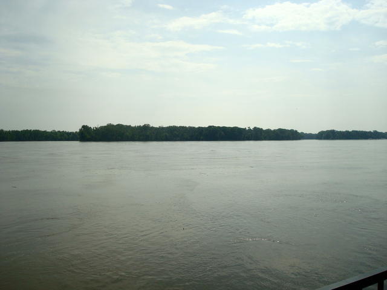
Вид на Миссиссиппи. Вдали остров для игры в пиратов. Он сливается с
противоположным берегом, но разобрать можно.
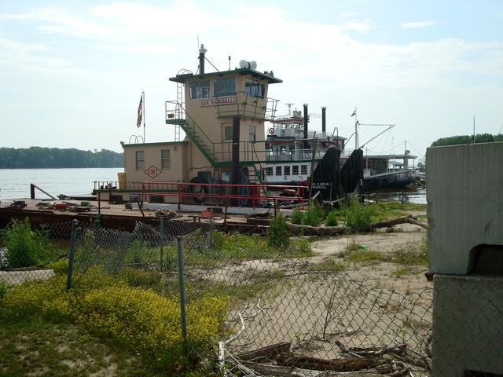
Городской порт.
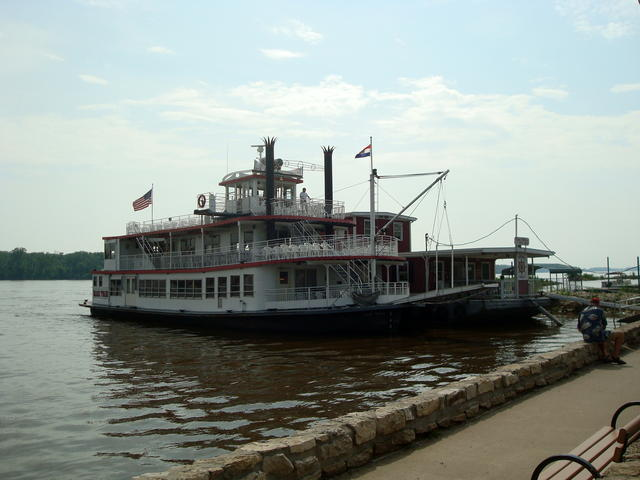
Пароходик зазывает на речную прогулку. Однако, у нас впереди более
интересные вещи.
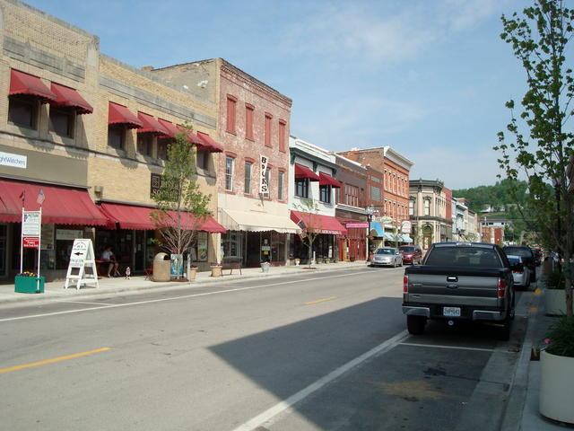
Городские улицы.
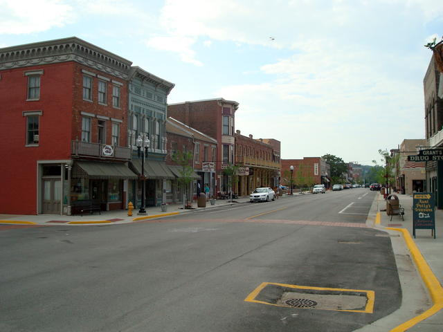
И еще...
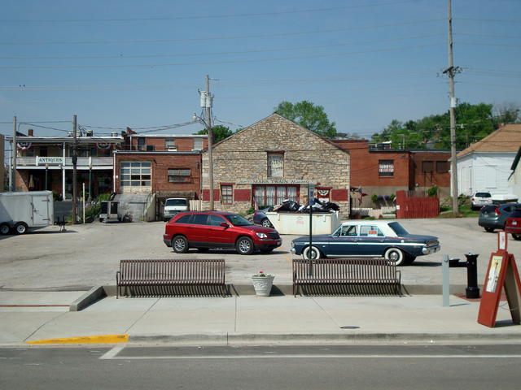
И еще...
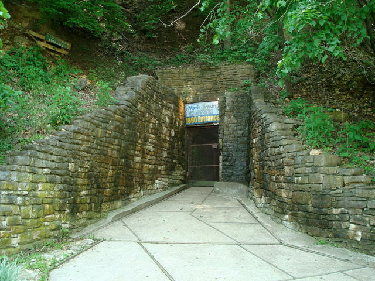
О! А вот самое интересное. Пещера, в которой заблудились дети. Кстати, одна
из самых старых коммерческих пещер в мире. Открыта в 1820 году,
приспособлена для экскурсий в 1890. Сейчас мы ее поглядим. Этот вход сделан
искусственно для туристов. А настоящий, прикрытый досками виден в левом
верхнем углу.
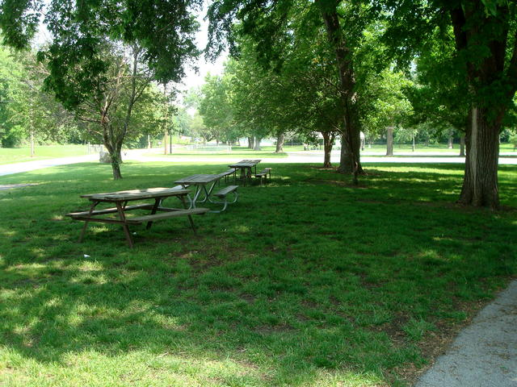
Рядом полянка для пикников. Все по книжке.
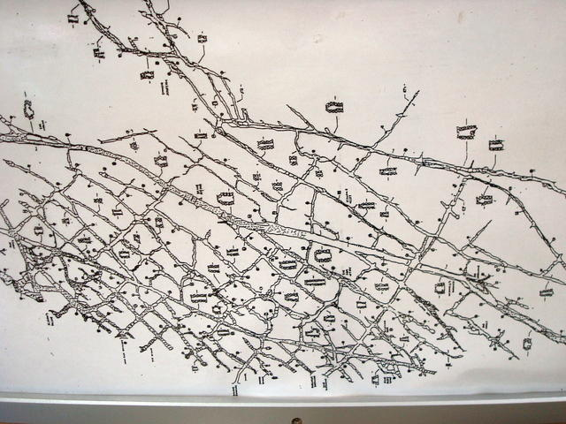
План пещеры. Не мудрено заблудиться, верно? Таких случаев там было
бессчетное количество раз. Осмотр включает только маленькую часть. А общая
протяженность лабиринта - несколько километров.
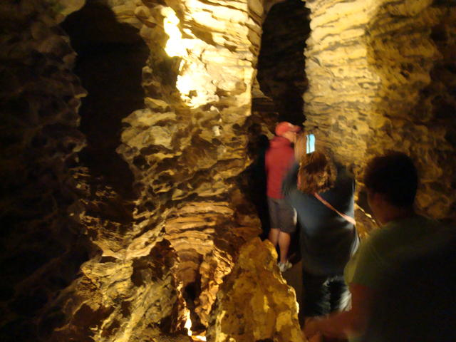
Вся пещера - сеть совершенно одинаковых узких ходов. В высоту - метров 5-10,
но два человека там не разойдутся.
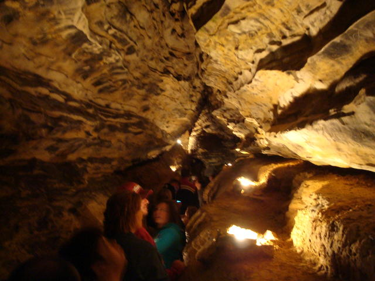
И еще...
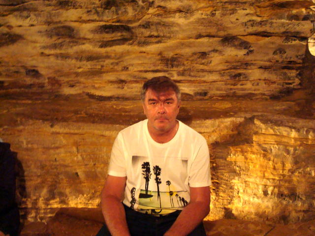
Привал
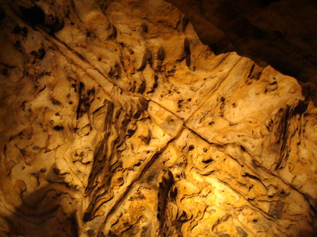
"Крест" - геологическое образование на своде пещеры. А в стене ниже -
"берлога под крестом". Гротик, где индеец Джо хранил сундуки со звонкими
долларами. Индеец Джо в реальной жизни вовсе не погиб в пещере и вообще не
был бандитом. Он пережил самого Марка Твена и умер в возрасте 103 года. И
всегда сердился на писателя, за свой "светлый образ" в мировой литературе.
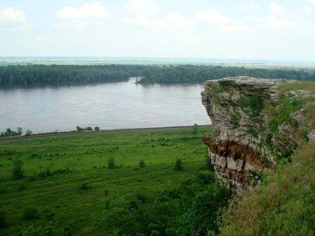
Утес недалеко от пещеры. В древности здесь произошла какая-то романтическая
история с индейцами, когда влюбленная пара бросилась с обрыва. Тут же стоит
маленький памятный знак. В 1967 году в городе исчезли трое мальчишек,
ровесников Тома Сойера. В последний раз их видели на этом утесе. Куда они
пропали, так никто и не узнал.
Назад|На главную